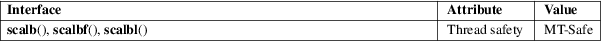

scalb, scalbf, scalbl − multiply floating-point number by integral power of radix (OBSOLETE)
Math library (libm, −lm)
#include <math.h>
[[deprecated]]
double scalb(double x, double
exp);
[[deprecated]] float scalbf(float x, float
exp);
[[deprecated]] long double scalbl(long double
x, long double exp);
Feature Test Macro Requirements for glibc (see feature_test_macros(7)):
scalb():
_XOPEN_SOURCE >= 500
|| /* Since glibc 2.19: */ _DEFAULT_SOURCE
|| /* glibc <= 2.19: */ _BSD_SOURCE || _SVID_SOURCE
scalbf(),
scalbl():
_XOPEN_SOURCE >= 600
|| /* Since glibc 2.19: */ _DEFAULT_SOURCE
|| /* glibc <= 2.19: */ _BSD_SOURCE || _SVID_SOURCE
These functions multiply their first argument x by FLT_RADIX (probably 2) to the power of exp, that is:
x * FLT_RADIX ** exp
The definition of FLT_RADIX can be obtained by including <float.h>.
On success, these functions return x * FLT_RADIX ** exp.
If x or exp is a NaN, a NaN is returned.
If x is positive infinity (negative infinity), and exp is not negative infinity, positive infinity (negative infinity) is returned.
If x is +0 (−0), and exp is not positive infinity, +0 (−0) is returned.
If x is zero, and exp is positive infinity, a domain error occurs, and a NaN is returned.
If x is an infinity, and exp is negative infinity, a domain error occurs, and a NaN is returned.
If the result overflows, a range error occurs, and the functions return HUGE_VAL, HUGE_VALF, or HUGE_VALL, respectively, with a sign the same as x.
If the result underflows, a range error occurs, and the functions return zero, with a sign the same as x.
See math_error(7) for information on how to determine whether an error has occurred when calling these functions.
The following
errors can occur:
Domain error: x is 0, and exp is positive
infinity, or x is positive
infinity and exp is negative infinity and the other
argument is not a
NaN
errno is set to EDOM. An invalid floating-point exception (FE_INVALID) is raised.
Range error, overflow
errno is set to ERANGE. An overflow floating-point exception (FE_OVERFLOW) is raised.
Range error, underflow
errno is set to ERANGE. An underflow floating-point exception (FE_UNDERFLOW) is raised.
For an explanation of the terms used in this section, see attributes(7).

None.
scalb()
4.3BSD. Obsolescent in POSIX.1-2001; Removed in POSIX.1-2008, recommending the use of scalbln(3), scalblnf(3), or scalblnl(3) instead.
Before glibc 2.20, these functions did not set errno for domain and range errors.
ldexp(3), scalbln(3)